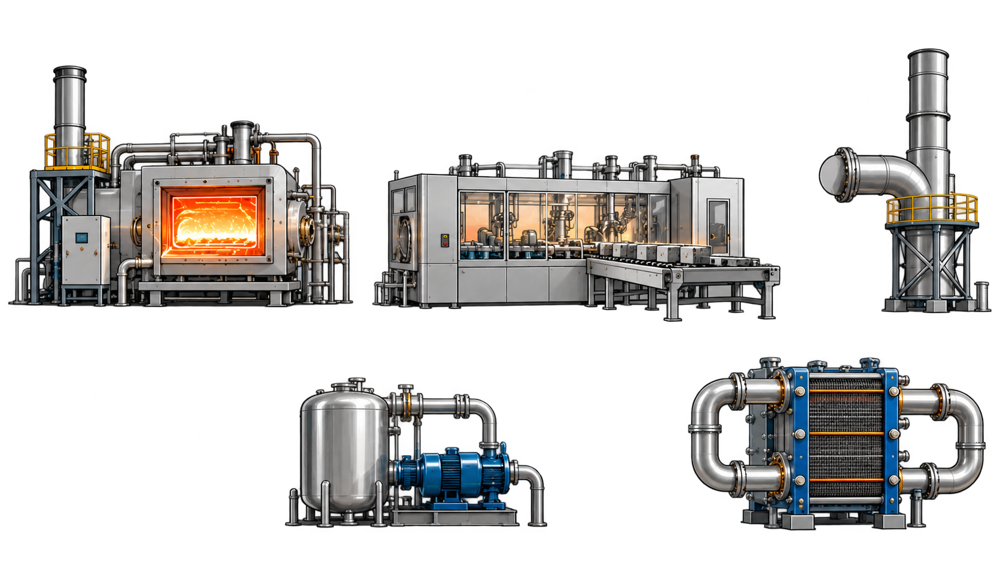
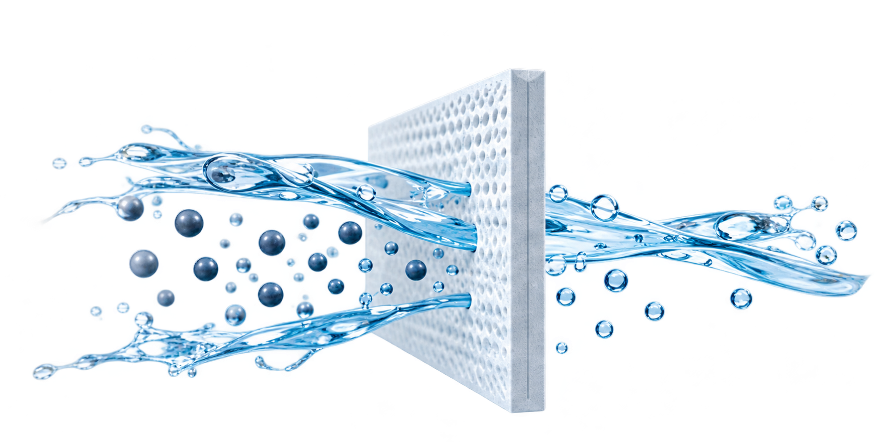
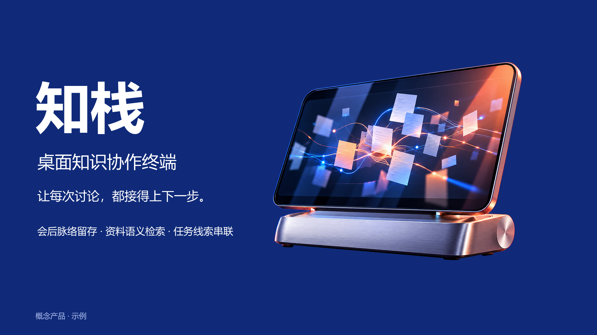
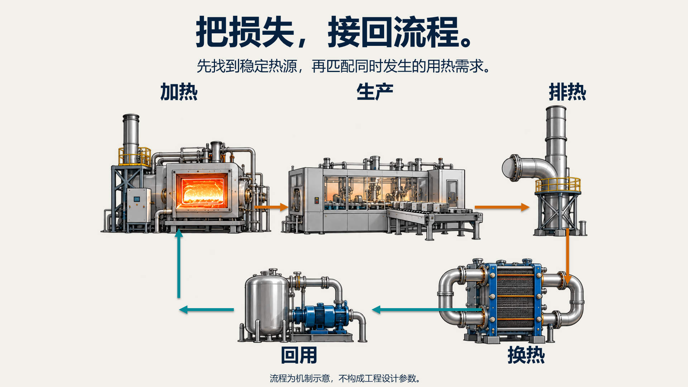
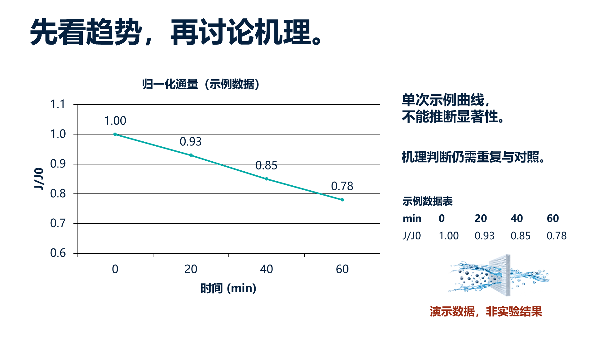

科研汇报 · 6 页完整概念
研究问题 → 证据层次 → 方法 → 数据 → 假说 → 验证计划
先把整页想清楚。只做概念就可以交付；需要复用图像时再要透明资产；只有明确选择时，才继续自动组装 PPTX。
三页共66个独立对象，补齐背景、箭头、管线、金属字形、阴影反射、法兰支架与文字。打开原概念 / 重建对照与逐层开关 →
下方旧三张插画仅为指定素材样例；旧包没有全页拆解。新版另提供完整组件包及独立 PPTX 重建试验。
完整页面概念本身就是一个交付点。这里先看信息层级、构图与视觉表达，不提前拆成 PNG，也不要求它已经能被机械拼回 PPT。
六个行业现已各自补成完整故事线，共 29 页。科研六页已重新设计；各套提供逐页原图、提示词、来源与概念交付包。此前单页探索和跨行业样例仍保留作对照。
浏览六套完整概念 · 29 页 ↗
需要复用视觉对象时，再交独立透明 PNG。下方棋盘格是网页 CSS 背景，用来显示透明像素；原 PNG 未被重绘、裁切或压缩。
每个 PNG 都可以作为一个图片对象单独移动、缩放或替换；对象内部的设备、膜材、纹理和像素不是矢量，也不能逐个零件编辑。

五个设备作为一张独立透明图片；设备之间无可编辑管线。

一张独立透明插画；水流、颗粒和膜孔内部不可分件编辑。
完整终端为一张独立透明图片；屏幕内容和外壳像素不可分别编辑。
这里公开的是一次真实组装试验及其问题，用来说明“技术能拼出来”与“视觉上符合用户预期”是两件事。
v4 已完成 PowerPoint 实际渲染、保存后重开、原生图表数值编辑，以及代理技术/视觉检查。用户反馈：
概念图不错，到你拼接就开始丑
概念表达获得肯定，拼装后的当前 PPTX 视觉结果被拒绝；此反馈绑定本次 v4，不代表未来装配已被接受。



概念模式 · 三页跨行业样例与证据 ZIP ↓ 资产模式 · 三页跨行业样例与透明资产 ZIP ↓
这两个旧包用来验证交付模式，不是一套完整科研演示，均不包含 PPTX。解压后的“项目证据”可用 APW 再次检查。